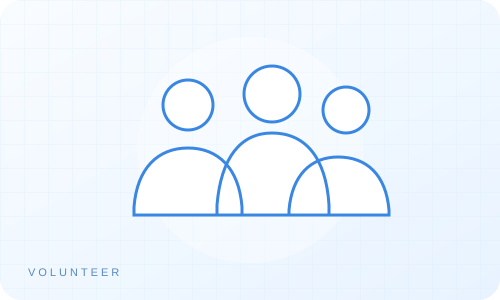
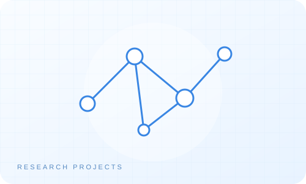

Gangnam Future Education Center
Supported middle school students’ science inquiry classes with in-service teachers.
Selected service and educational outreach experiences from my CV.

Supported middle school students’ science inquiry classes with in-service teachers.

Designed science experiments, creative activities, and drawing classes.

Designed and led physics and chemistry classes, a career fair, and recreation for students in an underserved area.

Assisted cooking activities at a developmental disability welfare center in Gwanak-gu.

Introduced university majors and answered career questions for middle school students.

Supported students through online career mentoring, math tutoring, and science and chemistry learning activities.